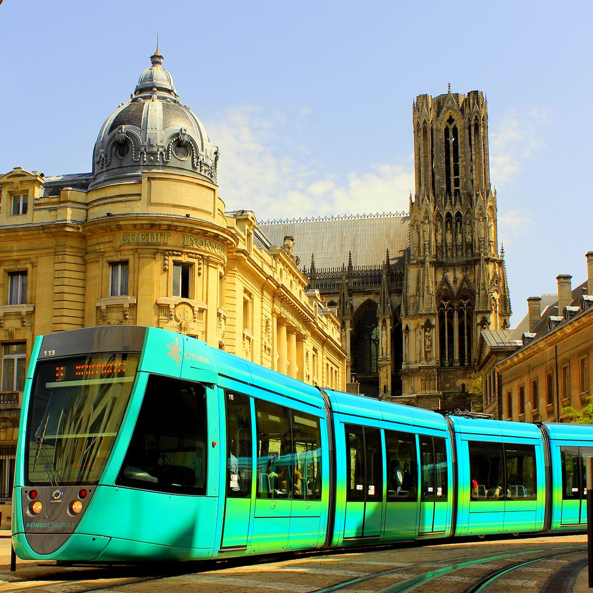
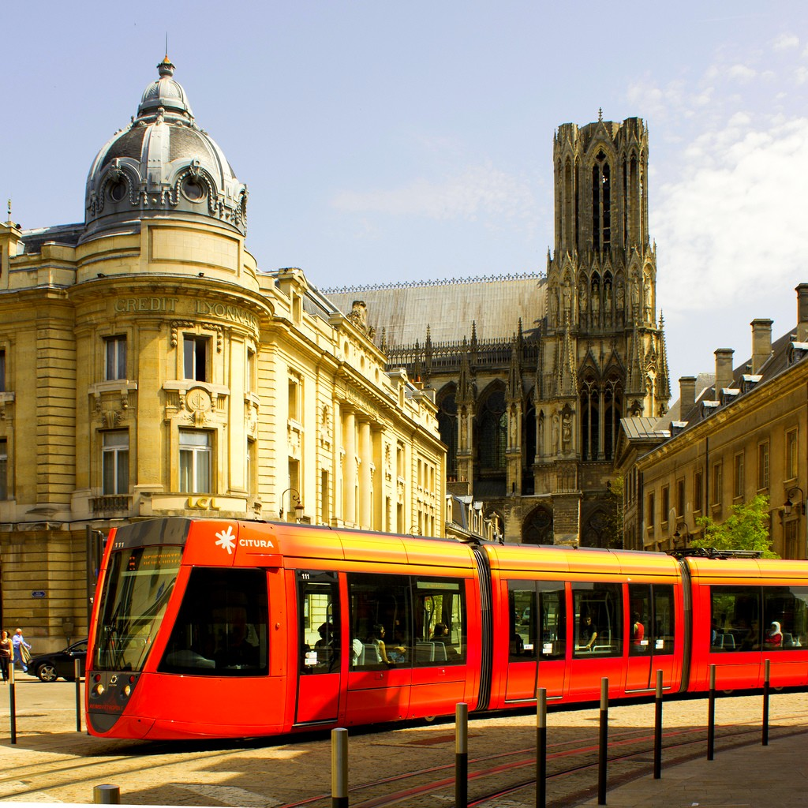

Reims, formerly spelled Rheims is a French municipality located in the Champagne-Ardenne region, and more specifically in the department of Marne. This city, consisting of 184,984 inhabitants, called Rémois or Rémoises is the twelfth town in France in terms of population and the most populous city of the Champagne-Ardenne region city.
The city has the nickname "the city of coronations" or "City of Kings", because in fact, it is the future site of Notre Dame de Reims that Clovis was baptized by Saint Remi and were crowned a very large number kings of France for more than ten centuries from Louis the Pious in 816 to Charles X in 1825.

The lilies remind the role of Reims, "city of coronations." The foliage is a "weapon talking" symbol homonymous Reims. Above the shield is a crown like a fortification wall to evoke supported by Reims without demerit seats. In the lower part of the shield appear decorations awarded to the City: the Legion of Honor and the Croix de Guerre for the First and Second World Wars.
When Archbishop Ebbo decided to build a new cathedral in the early ninth century, used the stones of the walls (in the state of decommissioning) with the approval of King Louis the Pious, which puts the city under divine protection since walls no longer provide their defensive function, "God is in custody!"
Reims is reputed for his Champagne. Indeed, Reims is situated on the edge of Paris deep sedimentary basin. It is bordered to the south by the "Montagne de Reims", whose slopes are home to some of the best wines of the Champagne vineyards, in the north-west by Mount Saint Thierry and east by Berru Mt.
The wealth of Reims is at its heritage, it has many historical monuments and Art Deco facades. In addition, it is designated a City of Art and History and has four sites on the World Heritage List of UNESCO: Notre Dame Cathedral, the Royal Abbey of Saint Remi, the Tau Palace, the Basilica Saint Remi.
One of the historic strengths of the economy is the Reims Champagne which was invented in the seventeenth century by Dom Perignon.


The city of Reims is organized by many channels of communication and transport. Indeed, the city is located at the intersection of three highways. In addition, after a first failed project from the 1980s, the year 2011 marks the return of the Reims tramway
Its route is 11.2 km long and is dotted with 23 stations for two. The Citura network and trams are operated as part of a public-private partnership, the company Dealer Rémoise Urban Mobility (March). It is now served by TER Champagne-Ardenne and TER Picardie to some of Amiens, Cambrai, Chalons-en-Champagne, Charleville-Mézières, Chateau-Thierry, Dijon, Epernay, La Ferte-Milon stations Metz and Sedan.


 
The city is historically linked to sport. It was the first holy city "the most sporting town in France" by sports daily L'Equipe in 1937.
Because of its tourism potential, Reims has nearly 60 hotels and a parking area for motorhomes but also an international center for living room and home and business in the area Clairmarais, Reims therefore has advantages in order to best possible welcome tourists who wish to visit the wealth of this city.
Reims is a city in relation to many other cities in the world, because, in fact, Reims is twinned with:
-
 Florence since 1954
Florence since 1954 -
 Brazzaville since the 5th July 1961
Brazzaville since the 5th July 1961 - Cantorbéry since the 13th May 1962
- Salzbourg since 1964
- Aix-la-chapelle since 1967
-
 Arlington since 2004
Arlington since 2004 -
 Kutna hora since the 23th February 2008
Kutna hora since the 23th February 2008
« Il n'est de cité que je préfère à Reims : c'est l'ornement et l'honneur de la France. »
Jean De La Fontaine